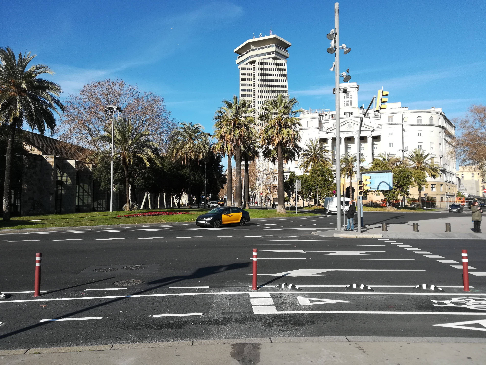

Barcelona
Kurztrip nach Spanien

Im Februar 2018 machten wir spontan einen Trip nach Barcelona. Die Buchung des Fluges und des Hotels hatten wir nur zwei Tage vor Abflug abgeschlossen und waren ganz gespannt auf unser Abenteuer. Der Flug von Düsseldorf verlief ohne Probleme. In Spanien angekommen mussten wir uns erst einmal orientieren und uns mit den spanischen Fahrkartenautomaten auseinandersetzen… Nachdem wir das geschafft hatten, fanden wir endlich den Weg in unser Hotel. Es lag etwas außerhalb der Stadt. Da es aber ein sehr hoher Turm war und wir im 18. Stock untergebrach waren, bot sich uns ein atemberaubender Blick auf die abendliche Stadt.
So schön der Ausblick auch war- wir hatten Hunger. Seit dem Morgen hatten wir nichts ordentliches mehr gegessen… also hieß es für uns: Nahrungssuche . Die war nicht ganz einfach aber schließlich wurden wir in einem kleinen muffigen Supermarkt fündig. Mit unserem „richtigen“ Essen bestehend aus Chips, Sandwiches und einer zwei Liter Flasche Cola, machten wir uns auf den Weg zurück ins Hotel und kamen uns ein bisschen wie Verbrecher vor, als wir mit der vollen Tasche durch die schicke Lobby zu den Aufzügen schlichen. Nach einem ergiebigen Mal und dem lustigen spanischen Fernsehprogramm fielen wir totmüde ins Bett. Am nächsten Morgen waren wir schon früh auf den Beinen. Wir hatten ja nur zwei ganze Tage vor Ort – und die wollten wir nutzen. Mit der U-Bahn ging es ins Stadtzentrum, wo wir erst einmal etwas planlos und verloren waren. Wir waren mal wieder auf der Suche nach Essbarem, da unser Mal am Abend nicht so lange vorgehalten hatte. Es war sehr aufregend sich mit einem alten spanischen Bäcker auseinander zu setzen, der kein Wort Englisch sprach oder zumindest so tat als könne er das nicht aber wir hatten schließlich Erfolg und mit gefüllten Mägen machten wir uns auf die Suche nach dem Meer.
 Am Hafen stellte sich dann das erste Mal richtiges Urlaubsfeeling ein. Die Sonne schien und die Möwen flogen am Himmel. Wir liefen ein Stück die Promenade herunter und fanden uns bald an dem langen, weißen Strand wieder, an dem die Stadt direkt angrenzt. Das Wasser war zwar zu kalt um darin zu baden, aber das rauschen der Wellen und die Seeluft genügten uns, um uns zu entspannen.
Nach einer guten Stunde am Strand ging es für uns auf die andere Seite der Stadt in die Hügel von denen sich die Stadt gut überblicken lässt. Eigentlich waren wir auf der Suche nach der Sagrada Familia, der großen Basilika Barcelonas, doch wir waren irgendwie falsch abgebogen und waren deshalb in einer Wohngegend an den Hängen unterwegs. Unser nicht ganz freiwilliger Ausflug in die Gegend führte uns in einen kleinen Park in dem A kazien standen und die Grillen zirpten. Da es fast Mittag war, konnten wir tatsächlich unsere Jacken ausziehen und auf einer Bank die warme Sonne und den fantastischen Ausblick genießen. Wir sahen fast die ganze Stadt und suchten die Stellen am Strand in der Ferne, an denen wir noch kurz zuvor gewesen waren.
Am Hafen stellte sich dann das erste Mal richtiges Urlaubsfeeling ein. Die Sonne schien und die Möwen flogen am Himmel. Wir liefen ein Stück die Promenade herunter und fanden uns bald an dem langen, weißen Strand wieder, an dem die Stadt direkt angrenzt. Das Wasser war zwar zu kalt um darin zu baden, aber das rauschen der Wellen und die Seeluft genügten uns, um uns zu entspannen.
Nach einer guten Stunde am Strand ging es für uns auf die andere Seite der Stadt in die Hügel von denen sich die Stadt gut überblicken lässt. Eigentlich waren wir auf der Suche nach der Sagrada Familia, der großen Basilika Barcelonas, doch wir waren irgendwie falsch abgebogen und waren deshalb in einer Wohngegend an den Hängen unterwegs. Unser nicht ganz freiwilliger Ausflug in die Gegend führte uns in einen kleinen Park in dem A kazien standen und die Grillen zirpten. Da es fast Mittag war, konnten wir tatsächlich unsere Jacken ausziehen und auf einer Bank die warme Sonne und den fantastischen Ausblick genießen. Wir sahen fast die ganze Stadt und suchten die Stellen am Strand in der Ferne, an denen wir noch kurz zuvor gewesen waren.